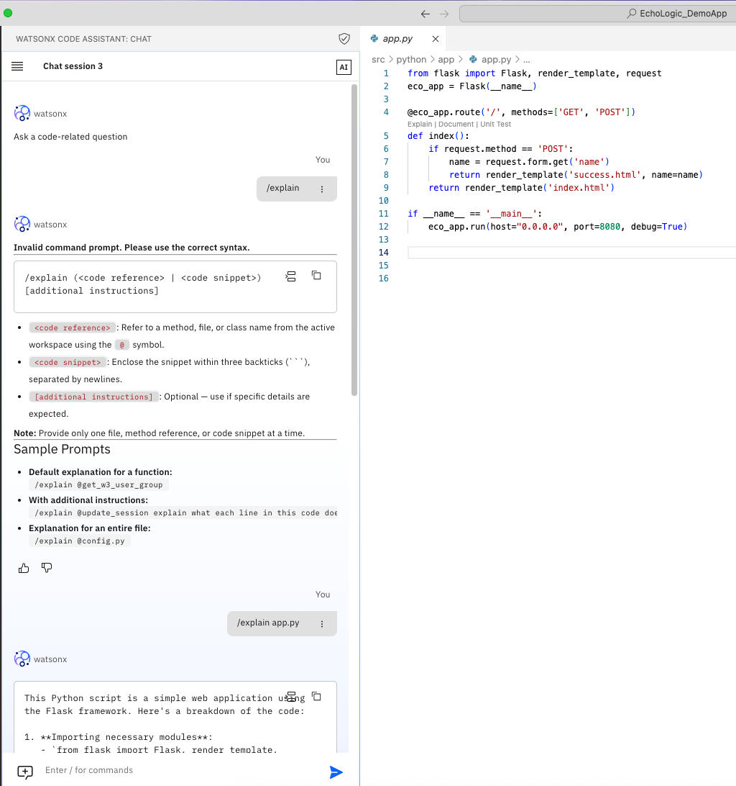
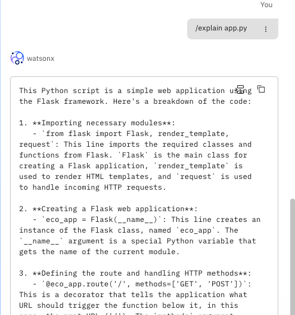

Code Lab
TODO: update flow, app references and screenshots TODO: update flow, app references from PIZZA to EchoLogic and screenshots
Introduction
TODO: add here more about Code
How to switch to Code from Home Page
You can switch to Code by either pressing "Let's go to Code" button on its tile:
Or you can always switch using the central app switcher on the top left of your screen:

Note: it takes a few seconds till your environment is setup and running, please be patient.
VSCode
NOTE: To showcase WCAx you need to use external VSCode as DevOps CODE in actual version does not have WCAx available. Will be provided in next releases.
Open the repository with VSCode from Control Repo view
WatsonX Code Assistant
 
Commit Code with WI

Conclusio
Go back to Introduction, Lab and Demo Overview or proceed with Next Lab